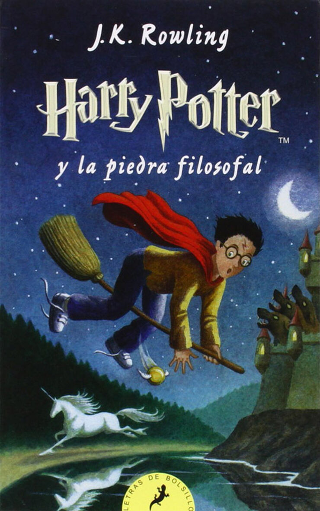

Harry Potter y la piedra filosofal
Harry Potter, un niño huérfano maltratado por sus tíos, descubre al cumplir 11 años que es mago y ha sido aceptado en el Colegio Hogwarts de Magia y Hechicería. Allí, Harry encuentra amigos (Ron y Hermione), aprende magia, juega Quidditch y descubre que debe proteger la Piedra Filosofal de Lord Voldemort, el mago oscuro que mató a sus padres.
Reseña del libro
Al principio de Harry Potter y la piedra filosofal, Harry de bebé se ha quedado huérfano, y unos peculiares personajes (Dumbledore, la profesora McGonagall transformada en gata, y Hagrid, quien viene volando en una moto) le encuentran un nuevo hogar. Durante casi diez años, Harry llevará una vida horrible con sus horrendos y materialistas tíos y primo. Aquí Rowling se centra en mofarse de los familiares, que son tan ridículos (y tan normales) que acabas riéndote, a pesar de lo mal que tratan a Harry. Lo que más me gusta de esta parte, y me parece genial, es la llegada de cartas dirigidas al chico, empeñadas en que lleguen a su destinatario, y las medidas tan absurdas que toman los tíos para evitarlo.